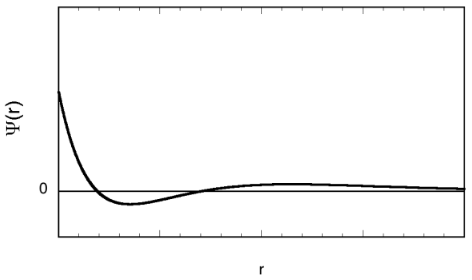

3 Topic - Atomic structure (#43-48)
3.1 2017 Local Exam
- How many total orbitals are there with principal quantum number n = 4?
- 1
- 4
- 9
- 16
Analysis: quantum numbers & orbitals
- Addition of an electron to a gas-phase Si atom results in the release of more energy than addition of an electron to a gas-phase P atom. What is the best explanation for their relative electron affinities?
- The electron added to Si experiences less electron- electron repulsion than the electron added to P.
- The electron added to Si enters a lower-energy subshell than the electron added to P.
- Si is more electronegative than P.
- Si is smaller than P.
Analysis: electron affinity and its trend
- The wavelength of one of the spectral lines of helium is 492 nm. What is the energy of a photon with this wavelength?
- 3.26\(\times 10^{–40}\) J
- 3.26\(\times 10^{–31}\) J
- 4.04\(\times 10^{–28}\) J
- 4.04\(\times 10^{-21}\) J
Analysis: wavelegth & frequency & energy
- Which of the following gas-phase ions has the largest number of unpaired electrons in its ground state?
- Cr3+
- Co3+
- Ni2+
- Cu2+
Analysis: electron configuration & Hund’s rule
- 52Mn undergoes radioactive decay to give 52Cr by what decay mode?
- Alpha emission
- Beta emission
- Positron emission
- Gamma emission
Analysis: nuclear chemistry
- An orbital has the radial wavefunction shown below. What orbital is it? 
- 1s
- 2s
- 3s
- 4s
Analysis: wave function & nodes
3.2 2016 Local Exam
- Which of the following statements is best supported by the data from Rutherford’s experiment of scattering alpha particles with a thin metal foil?
- The mass and positive charge of an atom are concentrated in its center.
- Electrons in atoms occupy only certain specific energy levels.
- Moving particles can also be described as waves.
- Atoms of a given element do not all have identical masses.
Analysis
- What is the formula of the most stable oxide of francium?
- Fr2O
- FrO
- Fr2O3
- FrO2